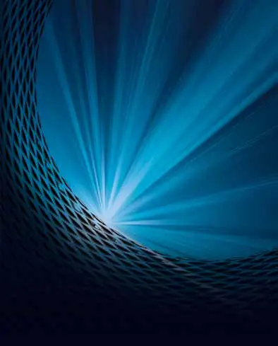
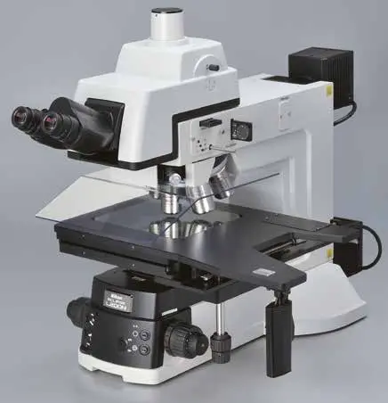
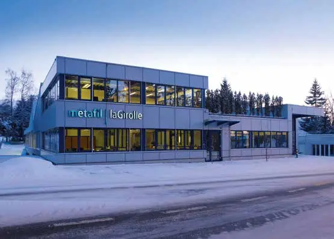
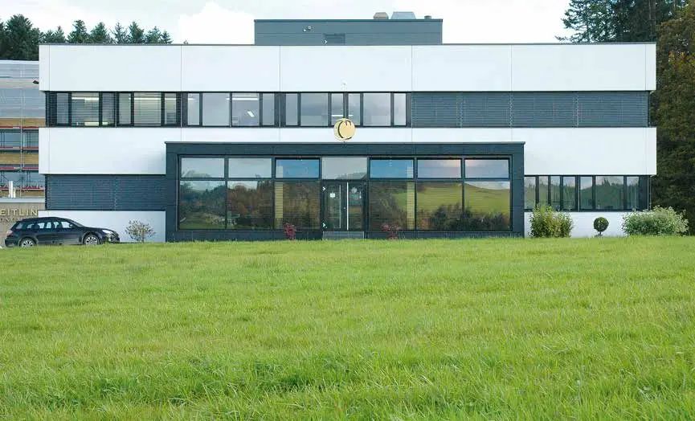
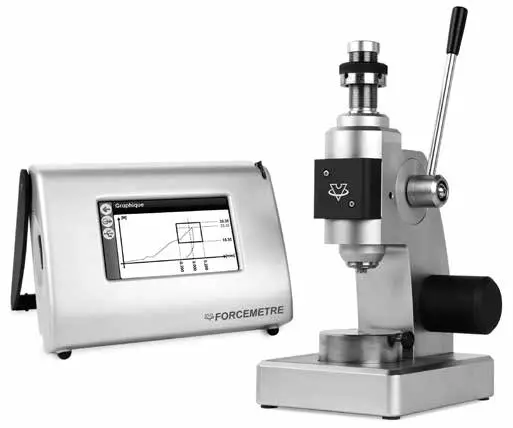

Horlogerie · 2020 · Arc jurassien
Swiss Knowhow – Horlogerie 2020
Édition de janvier 2020 du magazine Swiss Knowhow consacrée à l’industrie horlogère suisse et à ses sous-traitants. Les premières pages donnent la parole aux institutions de la branche (FH, Salon EPHJ, Technical Watchmaker Show, ASRH, Société suisse de chronométrie, Baselworld, apiah), sur fond de décision de la Comco concernant ETA et de projet de laiton sans plomb. Suivent une trentaine de portraits d’entreprises de l’Arc jurassien : décoration, traitements de surface, aiguilles, glaces saphir, boîtes, injection plastique, machines et services.
Sommaire · 34 articles

Fédération de l’industrie horlogère suisse FH
Interview de Jean-Daniel Pasche, président de la Fédération de l’industrie horlogère suisse FH
Salon EPHJ – Le monde de la haute précision
Entretien avec Alexandre Catton, directeur du Salon
TWS Technical Watchmaker Show – La passion et l’authenticité de la technique horlogère
Entretien avec Eric Zuccatti, président du Technical Watchmaker Show
 Interview
InterviewL’Association suisse pour la recherche horlogère – Objectif : préparer l’arrivée du laiton sans plomb
Entretien avec Fabienne Marquis Weible, directrice de l’ASRH
Société suisse de chronométrie (SSC) – « L’innovation est le moteur de l’industrie horlogère »
Rencontre avec son président, Nicolas Clerc
 Interview
InterviewBaselworld – Le salon horloger se réinvente pour assurer l’avenir
Entretien avec Michel Loris-Melikoff, Managing Director de Baselworld
L’apiah – La voix des entreprises pour assurer la paix du travail
Entretien avec Marie-Thérèse Kohler Fiorellino, secrétaire générale de l’apiah
DM Surfaces – Du laser par ablation à la fabrication additive
Entreprise lauréate du Prix Raiffeisen des Entrepreneurs
Aiguilla SA – Seconde après seconde, un maître du ballet des aiguilles
Aiguilla SA, second after second, mastering the whirl of watch hands
 Publireportage
PublireportageAbarthel Sàrl – Artisan au service de l’esthétisme horloger
ABARTHEL Sàrl, craftsman at the service of watchmaking aesthetics
Broquet Décolletage SA – Précision au service de la haute horlogerie
Des micro-pièces décolletées à Bévilard
CV Décor Sàrl – Réactivité et excellence en décoration horlogère
Une jeune société locloise portée par l’expérience de son fondateur
 Publireportage
PublireportageAdmo Plastique SA – Pour du plastique toujours plus vert
Injection plastique pour l’horlogerie et matériaux bio-sourcés au Locle
Label Surface – Artisans de haut vol
Décoration de cadrans artistiques à La Chaux-de-Fonds

Innovative CAM SA – Spécialistes en digitalisation de la production
Au service de l’industrie 4.0

PublireportageSomtec-CH – De la sous-traitance jusqu’à la machine de polissage
Une société chaux-de-fonnière en plein essor
Econorm AG – L’art de sublimer la transparence
ECONORM AG – Die Kunst des vollkommenen Durchblicks
 Publireportage
PublireportageLécureux SA – Avant-gardisme et performance au cœur du développement
LECUREUX SA, avant-gardism and performance at the heart of development
Les Artisans Boîtiers SA – Un savoir-faire unique pour des boîtes d’exception
Des synergies renforcées avec Quadrance & Habillage

InterviewRyf AG – L’évidence de la qualité
Entretien avec Daniel Ryf, directeur général
TechnoFinish SA – La fiabilité suisse à votre service depuis 2003 / TechnoFormage SA – Des solutions pour l’emballage thermoformé et injecté
Polissage, brosses techniques et conditionnement pour l’horlogerie
Claude Piguet SA – Leader du polyuréthane
La petite société familiale de Grandson aux compétences uniques
Dihawag Horlogerie – Au service de l’industrie horlogère
Spécialiste du décolletage et du fraisage

PublireportageMétafil-laGirolle SA – L’injection par moulage de poudre comme diversification
Sous-traitance mécanique, décolleteuses maison et girolles à Lajoux

PublireportageEscad SA – L’expertise en vernis et laques pour cadrans
Vernissage et laquage de composants horlogers à La Chaux-de-Fonds
Inhotec SA – À la pointe de la technologie pour des résultats toujours plus performants
Nouveaux locaux et équipements pour l’usineur de précision du Locle
Monnier SA élargit encore son offre – Prestations multiples sous le même toit
Électroplastie et décoration horlogère à La Chaux-de-Fonds
Procolor LCTI, tampographie horlogère – Un mariage de cœur et de raison
La tampographie rejoint Monnier SA à La Chaux-de-Fonds
 Publireportage
PublireportagePierre Bercher SA – Injection plastique pour l’horlogerie depuis 40 ans
Un pionnier de la pièce technique injectée à Cernier
Oesch GmbH – Boucles, fermoirs et accessoires pour l’horlogerie
Entretien avec M. Michel Oesch, propriétaire et directeur de l’entreprise
Sebal SA – Producteur de verres saphir entièrement suisses / Timsaph SA – Le saphir synthétique 100 % suisse
Verres de montres et matière première produits dans le Jura
 Publireportage
PublireportageTSM Compagnie d’Assurances – L’assureur sur-mesure du monde horloger
Assurance transport et risques spéciaux depuis La Chaux-de-Fonds

PublireportageVOH SA – Appareils pour sublimer le geste horloger
Des équipements développés et fabriqués à Courtelary
 Publireportage
PublireportageGMG Composants – Pour des aiguilles et index d’exception
Aiguilles, appliques et désormais ponts et parties de cadran au Locle
Entreprises de ce numéro · 40

A à Z emplois SA
Recrutement et placement de personnel
ABARTHEL Sàrl
Masses oscillantes, frappe et cadrans émail grand feu
Admo Plastique SA
Injection thermoplastique de précision

Aiguilla SA
Fabrication d’aiguilles de montres
apiah – Association patronale des industries de l'Arc horloger
Association patronale

ASRH – Association Suisse pour la Recherche Horlogère
Recherche horlogère communautaire
Baselworld
Salon horloger et bijoutier

Broquet Décolletage SA
Décolletage de précision

Claude Piguet SA
Pièces en polyuréthane et usinage métal
CV Décor Sàrl
Décoration de mouvements horlogers
DIHAWAG Horlogerie
Outils de coupe diamantés

DM Surfaces SA
Cadrans monobloc par technologie laser

ECONORM AG
Verres saphir fonctionnels

EPHJ – Salon international de la haute précision
Salon professionnel

Eric Chabod
ESCAD SA
Vernissage et laquage de cadrans

Fédération de l'industrie horlogère suisse FH
Association faîtière de l'industrie horlogère
GMG Composants
Aiguilles, index et appliques

ICAM SA
Logiciels FAO et mise en réseau d'ateliers

INHOTEC SA
Composants et ébauches horlogers

LABEL SURFACE SA
Décoration artistique de cadrans et casting de précision

Lécureux SA
Instruments de précision et automation horlogère

Les Artisans Boîtiers SA
Boîtes de montres très haut de gamme

Métafil-La Girolle SA
Décolleteuses CNC et usinage de précision

Monnier SA
Électroplastie et décoration horlogère

Oesch GmbH
Distribution d'accessoires métalliques pour bracelets cuir et écrins
Pierre Bercher SA
Injection plastique de pièces techniques horlogères

Polirapid Swiss SA
Fabrication de brosses techniques
Procolor LCTI Sàrl
Tampographie horlogère
Quadrance & Habillage
Fabrication de cadrans haut de gamme

Ryf AG
Microscopie industrielle et systèmes de mesure

SEBAL SA
Verres de montres en saphir
Société Suisse de Chronométrie (SSC)
Organisation professionnelle horlogère
SOMTEC-CH SA
Rodage, polissage et machines de polissage
Technical Watchmaker Show (TWS) – Event High Sàrl
Salon de la sous-traitance horlogère
Techno-Synthetic SA
Micro-injection plastique

TechnoFormage SA
Emballages thermoformés et injectés
TIMSAPH SA
Production de saphir synthétique
TSM Compagnie d’Assurances
Assurance transport et risques spéciaux
VOH SA
Appareils et outillage pour l’horlogerie
Aucun résultat.